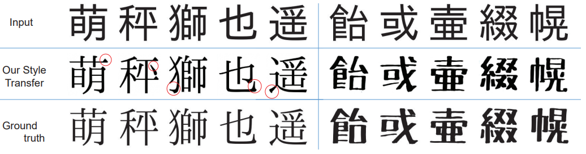

Japanese Kanji Font Style Transfer based on GAN with Unpaired Training
Hiroki Sakai, Daisuke Niino, Takashi Ijiri
Shibaura Institute of Technology

Abstract. To design a whole package of Japanese font is labor consuming, since it usually contains about 30k kanji characters. To support
an efficient design process, this poster attempts to adopt a style transfer algorithm for font package completion. Given two font
packages where one contains all characters and the other lacks a large part, we train CycleGAN to perform style transfer
between the two packages and transfer the style from the former to the latter. To illustrate the feasibility of our technique, we
performed style transfer experiments and achieved visually plausible results by using a relatively small training data set.
Materials
line for paper
@inproceedings {sakai2018,
booktitle = {Pacific Graphics Posters},
editor = {Fu, Hongbo and Ghosh, Abhijeet and Kopf, Johannes},
title = {{Japanese Kanji Font Style Transfer based on GAN with Unpaired Training}},
author = {Sakai, Hiroki and Niino, Daisuke and Ijiri, Takashi},
year = {2018},
publisher = {The Eurographics Association},
ISBN = {978-3-03868-074-1},
DOI = {10.2312/pg.20181290}
}